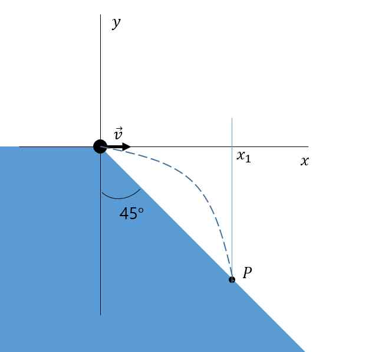

문제 3
그림과 같이 지면에 대해 45도 기울어진 경사면으로 공을 지면에 수평방향으로 \(v\)의 속도로 쏘았다. 중력 가속도는 g로 표시한다.
가) 공이 경사면 위 점 P에 부딪쳤을 때, 점 P의 x 좌표를 구하라.
나) 공이 점 P에 충돌한 직후, 공이 가진 속도의 x성분과 y성분을 구하라. (단, 공은 경사면과 반발계수가 1인 완전탄성 충돌을 한다고 가정한다.)
다) 공이 점 P를 떠나 다시 경사면에 충돌하는 점을 점 Q라 할 때, 점 Q의 x 좌표를 구하라.
